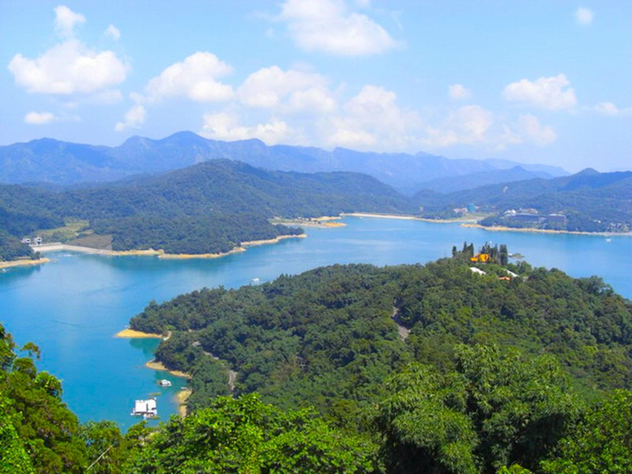
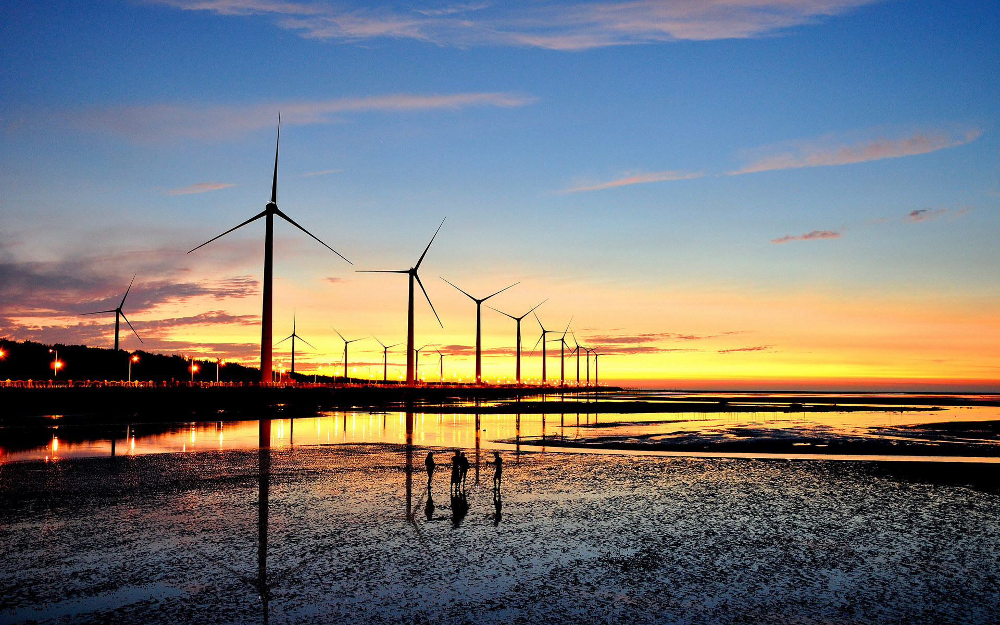

1.阿里山
阿里山，台湾地区地名，是台湾地区的著名旅游风景区，阿里山位于台湾省嘉义市东方75公里，地处海拔高度为2,216米，坐标为北纬23度31分，东经120度48分，东面靠近台湾最高峰玉山。由于山区气候温和，盛夏时依然清爽宜人，加上林木葱翠，是全台湾最理想的避暑胜地。
1.阿里山
阿里山，台湾地区地名，是台湾地区的著名旅游风景区，阿里山位于台湾省嘉义市东方75公里，地处海拔高度为2,216米，坐标为北纬23度31分，东经120度48分，东面靠近台湾最高峰玉山。由于山区气候温和，盛夏时依然清爽宜人，加上林木葱翠，是全台湾最理想的避暑胜地。

2.日月潭
日月潭位于中国台湾地区阿里山以北、能高山之南的南投县鱼池乡水社村，旧称水沙连、龙湖、水社大湖、珠潭、双潭，亦名水里社。 日月潭湖面海拔748米，常态面积为7.73㎞²(满水位时10㎞²)，最大水深27米，湖周长约37千米，是台湾外来种生物最多的淡水湖泊之一。它以光华岛为界，北半湖形状如圆日，南半湖形状如弯月。
2009年，日月潭入选世界纪录协会"台湾最大的天然淡水湖"，在清朝时即被选为台湾八大景之一，有"海外别一洞天" 之称。

3.高美湿地
高美湿地位于台中县清水镇西边，形成原因是由于高美海堤之建立，几十年来逐渐累积淤沙所形成，高美湿地的面积不大，但由于其同时拥有泥质及沙质滩地，加上河口沼泽地带交会在一起，因而孕育出丰富且复杂的湿地生态，包含了潮溪、草泽、沙滩、泥地等生态栖息地，并与目前全台湾省最大族群的云林莞草区相邻，进而形成干湿相间并有植物生长的复杂地形。地形的多样所代表的即是生物物种差异度非常高，因此高美湿地便成为各种底栖生物、鱼贝类，鸟类、水禽类栖息的最佳场所。